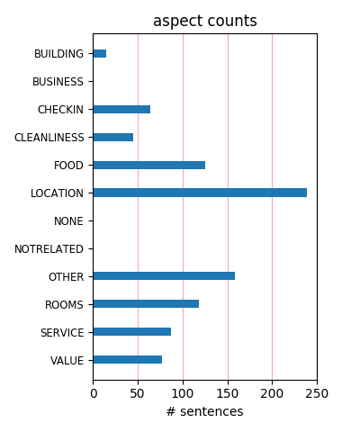
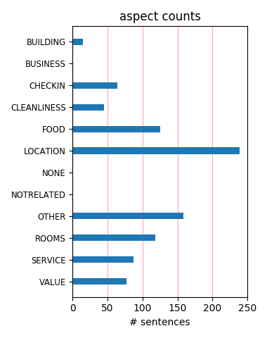

if you want to take no risk about staying in venice ,ca formenta is a good choice , goo d views , helpful staff , central location , it is value for money in an expensive place , you get what you pay for here , its not top of the tree but its clean , friendly and wort the money
wife and i stayed at Hotel Ca Formenta a few years ago. Thanks for all reviews as this was perfect hotel. Great to be a 5-10 minute walk to Square, yet nice quiet place at night. We had corner room over looking water wtih bottle of champaign waiting for us on check in. Highly recommend.
The hotel is well located for exploring Venice on foot. Nice journey from Marco Polo Airport on Water Taxi (a bit expensive at €80 but worth it). Some good Local restaurants nearby on Via Garibaldi . All in all in an expensive city this is a good offer in terms of room quality,location,service and value.
This hotel overlooks the lagoon in a quieter part of town, but is still ideally placed for exploring. The rooms with a view of the lagoon are of good size. Note that they also overlook a street with a bar next door which is popular with locals. They can be quite noisy at night but are at least some local colour!
We stayed at Hotel Ca' Formenta in April 2011, I recommend this hotel because it is very clean, the breakfast is very good and the location is few steps from the vaporetto stop. It doesn't have a restaurant but you have plenty of places to eat few steps away. We will not hesitate to return if we go the Venice again
The staff of the hotel was very friendly and courteous. The location of the hotel was far enough away from the huslte and bustle of St Marks Square but at the same time not too far to take an evening stroll along the canal to St Marks. The room was small but comfortable and luxurious. Would definitely stay there again.
We stayed for our 1st anniversary and it was so romantic. The staff gave us a complimentary bottle of champagne which was very thoughtful. The staff were very friendly and helpful when we asked for directions. Very close to St. Marks and to Arsenale boat station. We will definitely stay there again if we make our way back to Venice.
The best of all the hotels we stayed in Europe. Good size room for European standars, nice bed and bathroom. Great view. Very nice and clean. Close to everything and Marco is very nice and helpful. The one thing I wouldn't recomend at all (and it has nothing to do with the hotel) is eating at the restaurant next to it at the corner: La Nuova Perla, IT WAS GROSS!
My family and I recently stayed at this hotel for 3 nights and found it extremely comfortable. We had a 'suite' room with four beds and it was a good size, very clean and had excellent air conditioning. The room also had huge picture windows looking out over the bay where we could watch the huge private yachts go by. Breakfasts were usual hotel fare, but very good, and staff very helpful.
.Great small hotel which is only a 10 minute walk from St Mark's Square. The hotel is beside the Lagoon but is away from the crowds of tourists. Some good restaurants are located just along the street from the hotel, suggest Restorante Giorgione, not cheap but excellent food. Hotel is small with good clean rooms and friendly staff, a room with a view of the Lagoon is worth the small extra charge
We stayed for three nights in late January at this little hotel and thoroughly enjoyed it. I had booked via their website and had some difficulty with the computer which they negotiated with no problem. We were given excellent advice about local eating spots also. Clean room, great shower, great location (not in heavy tourist area but close enough to walk everywhere) - and for a great price in winter anyway!
we stayed here last summer--it was very nice, about 6 bridges from st mark's (10 minute walk). we were glad we didn't stay on the water closer to the main square (due to all the exhaust fumes there), or on the grand canal (kind of stinky in late august). it is very pleasant and quiet, the rooms were very nice. we are going back this summer and will stay there again, they have given us a 10% discount for the repeat business.
Excellent hotel. A little off the beaten tourist trail which was great. Easy walk from vaporetto stop. You are in a wonderful Italian neighborhood. Several great restaurants just down the street, easy walking distance. We had a very nice room with view of the water. Room was comfortable and very clean. Staff was very friendly and helpful. Very cheerful breakfast area with excellent breakfast. We will definitely stay here again!
We stayed at 5 different hotels during our stay in Northern Italy and this one was our favorite. The staff was the friendliest of all the hotels! The room was average sized for Italy (small), very clean and also nicely decorated. Try to get a Sea view room if available. Free breakfast was good. The location is nice and close enough to the San Marco's Square, but far enough to sleep quietly. Overall, it was a very enjoyable stay!
I stayed in this hotel with my parents and we all absolutely loved it. From the beautiful and enormous breakfast in the morning to the excellent and friendly staff, Hotel Ca'Formenta will make your stay in Venice something special. The rooms are lovely and extremely clean (cleaned daily in fact), with excellent ensuite bathroom, including a shower over a bathtub, and the staff make excellent, affordable restaurant recommendations.
my friends and i stayed for 3 nights prior to our cruise. The hotel and very centrally located. The staff is very helpful. They even helped us get a last minute private water taxi to the cruise terminal. The breakfast is good. there is free wifi in the lobby. The rooms are very clean and average size for Venice. The beds are comfortable. Overall it was a very nice and pleasant stay at Ca' Formenta. I would definitely recommend staying here.
just returned from a three night stay and it was faultless. We have been to Venice several times and without a doubt the Ca`Formenta was our best hotel yet. The rooms are spotlessly clean and comfortable, all the staff are friendly and helpful and the inclusive breakfast is tasy and plentifull, It was especially nice after a long tiring day in Venice to sit outside the hotel with a cold beer and watch the world go by. We will definitely be back.
Stayed here on a four day visit to Venice. Room was exceptionally clean and modern for a 3 star hotel including Bath,Shower, Bidet, Tv and safe. Continental breakfast was fantastic with lot's to eat and really helpful staff who can all speak very good english. Location was exellent within 10 minutes walk of St Marks Square and three water ferry stops.Lot's of good restuarents nearby although prices are somewhat expensive, try the tourist menu's.
The location was great as you can get a feel for the life of Venetian residents in the off season, and there are useful shops such as a Spar, bakery and greengrocers further along via Garibaldi. Very small bathroom. Strange fading or stains of the carpet in the room. One member of breakfast staff was unfriendly. All other staff were friendly and helpful. Overall an OK place to stay in a good location. Trip to Murano island to see glass-making is a must do experience.
An amazing place in a brilliant location at really good value. You have to bear in mind that you are not in a five star and therefore the rooms are a little dated and facilities meagre. However the staff were brilliant, the breakfast more than adequate, the view of the lagoon great from the room and also from outside the hotel where we spent some time people watching. You have a fair walk to st marks sq but it is a walk worth doing. A great trip, great city, good hotel.
This hotel has a lot in it's favour. It's very reasonably priced, service is friendly and efficient, it is only a 5-10 minute stroll from St Mark's Square and it seems to have beeen recently modernised. I would definitely consider staying here again when I am next in Venice. Importantly it doesn't try to market itself as something it isn't. It is a three star hotel that is clean and centrally located. I wasn't disappointed, and would agree with the other positive reviews.
Unlike other reviewers, I didnt have a room facing the lagoon. Even with the view of the next door building, it was a great hotel. Our room was very clean. The air condidtioning worked extremely well. It is also easy to find! If you take the water bus, just get of at Arsanle take a right, then a left down the road and its right there! The concierge recommended a good place to dine and couldn't have been more helpful. I will definately return to this hotel when I go back to Venice :)
Stayed: September 13 2007 Venice: A truly amazing experience. Ca Formenta: Made the trip all the more amazing! The two days we spent in this hotel was not enough. The location, rooms, breakfast and staff were the best. I'm glad I didn't go by the reviews that were not to par on this place. In my opinion, it surpassed my expectations! I loved every minute of it! Thinking of going again next year! Marco, Stephanie...get my room with the view ready! Thanks a bunch for adding to my lovely experience!
Warm welcome from a friendly staff; room clean, well-equiped and delicately decorated to create a cosy and venician decor. The breakfast was included in my booking and the buffet served is for every taste with a large choice of options. The hotel has the big advantage to be located close to vaporetti stations, to be at 5/7 minutes walk from Basilico di San Marco. There are also good restaurants surrounding the hotel. A tourist cannot ask for more! I will definitively use this hotel again everytime I go back to Venice.
Our trip to Venice was outstanding and hotel Ca' Formenta was part of the beautiful experience. The staff was very friendly and helpful, they also helped me to surprise my fiancee with a nice bouquet of roses. The bottle of sparkling wine offered by the hotel at our arrival was a surprise also for me and it made our arrival evening perfect. The breakfast is also very good and assorted. I would definitely recommend this hotel to everyone who visits Venice due to its very nice location, outstanding service and good value.
After lots of research and reading many reviews, we chose this hotel for our trip, in one word, outstanding. We would stay there again. Was great value for money, breakfast was good and filling, room was nice and clean. Service was excellent; a bottle of Proseco on ice in our room to celebrate my husband's Birthday on arrival was a lovely touch. The location was excellent and found a lovely Venetian bar on same road which served chilled Proseco at 2 Euros a glass, cheaper than we get at home!!! Ten minutes from St Marks SQ!
We've just got back from a 3 night stay at Ca' Formenta and we loved it. The location is perfect - 10-15mins walk from the main tourist areas so far enough away that you can get away from the crowds. Plenty of restaurants etc around the hotel and the view is amazing. Definitely pay extra for the lagoon view room, it really makes a difference. Rooms were spotless, if a little on the small side and the staff couldn't have been more helpful. Reallly handy for the water bus and the connection to the airport as well. Would definitely stay again.
This was the second visit I have made to this hotel, and I would definitely recommend it... A small hotel with great staff, reasonably priced for Venice... and a fantastic location on the main lagoon waterfront. The reception, small bar and breakfast area are located on the ground floor, looking out onto the lagoon. Breakfast was a good selection. The rooms and bathrooms are of a good size, and if you can get a side canal view the better. Overall, a definite recommendation (get off at the Arsenale boat stop from the airport, hotel is 2 bridges to the left)
we stayed at this hotel on 5/23-24 2005. it is very convenient to the water taxi station and the staff was excellent. it is about a 15 minute walk to san marco and the free breakfast was great! we had to catch an early water taxi on our last day (7am) and the young man at the desk who's name was simone got up at 5:30 am to have coffee and breads ready for our early departure! when do you ever see a hotel do that for you? room was a little small and the shower stalls were tiny, but a good staff makes up for that! i would come back here again on my next visit!
This hotel is right near the water just a short walk to the boat service and about 1/2 mile from tourist central and all the shops. Great Service from Marco and staff. I took the taxi from the train station to the private entrance- breathtaking start to Venice. I would highly recommend this hotel. The room is simple and nicely decorated, better than the B & B I stayed in Florence. I enjoyed the breakfast daily and I was off to sight see each day. The sunsets are just amazing and you get a front row view just a few steps outside this hotel's front door. Grazzie Prego!!!
We just spent 3 nights at this hotel this July. It has a great location just walking distance from the water bus station and San Marco place, close to some groceries stores too. Great view to the lagoon. The building looks old from outside but the rooms are clean with new bathroom renovated. Staff is very helpful , speaks English. We were pleasantly surprised to get a complimentary bottle of champagne on my wife birthday in the room. Surf free internet on sidewalk table outside while sipping coffee. Free good breakfast. Hotel can provide a free water taxi ride to Murano glass factory on request
Wonderful hotel in a superb location. We loved the open aspect of a view over the lagoon. Castello is a great area away from the crowds but close enough. We had an economy double without a view but didn't go to Venice to look through a window so it didn't bother us at all. Friendly and helpful staff. It was my birthday during the stay and returned to the room to find a bottle of prosecco on ice. They obviously picked this up from the cards in my room or my passport. Either way it was a really nice touch. When we return to Venice we wouldn't stay anywhere else. A great find and a real little gem.
Room, staff, service were all wonderful. Splurged for the Superior room facing the lagoon with small balcony...worth every penny. So much to look at including passing cruise ships. A little further from the bustling part of Venice by St. Mark's Square, but that's what I wanted. Not a far walk at all. Nights were quiet. Bathroom was small but so are most in Europe. It was very clean so that's all I cared about. Really, how long are you in there? I truly enjoyed my trip to Venice, and the Hotel Ca'Formenta was a big part of it. I researched a lot of hotels via this site and it didn't steer me wrong.
Have stayed at this hotel several times and it is always wonderful. The rooms are pleasant, showers hot and powerful and the whole atmosphere warm and welcoming. When we came in soaking wet and cold, we were brought hot chocolate and cake to our room and offered extra towels without prompting. The breakfast is more than adequate, with good quality ham and coffee, croissants and cheese. The situation of the hotel is just far enough from St Marks to be a nice walking distance yet away from the crowds. With lovely views of the grand canal, good local restaurants and shops nearby, I would not stay anywhere else!
I stayed here with my 5 year old for a 2 day whirlwind Biennale visit and booked the front "view" room. The rooms were nothing to write home about, but the view to to the Lagoon, the renovated bathroom and being a quick sprint from the Biennale (Giardini and Arsenale both a 5 minute walk from the hotel) made it worth it. The breakfast was definitely sub-par, however. I would recommend skipping the breakfast or booking without (was not an option when we booked on hotels.com). The gentlemen manning the front desk were extremely helpful and provided us with some excellent options for restaurants frequented by local Venetians.
We stayed in a room facing the Lagoon with a gorgeous view. It is a fairly busy area during the day but very quiet in the evening. The room was not large but a decent size. The bathroom is compact and is pretty well average for European hotels. The property is well maintained and has a friendly helpful staff. It is a good idea to ask the front desk staff for restaurant recommendations as a large number of restaurants have been taken over by non Italians and are known for not using fresh food and mostly frozen foods. The hotel is within a 10 minute walk to St. Mark's square. There is a nice roof deck to enjoy and the breakfast was very pleasant. I would stay here again.
We arrived at this hotel last Monday for a week stay – what a let down having read the reviews. The beds were extremely hard as were the pillars, they where standard; wallpaper hanging off the walls, and Showers did not work without flooding the bathroom. The breakfast staff had a novel way of cleaning the table cloths at breakfast. They simply turned them over with all the debris falling onto the floor, which of course were picked on people’s feet as they walked up and down through out the hotel. When I confronted the manager he could only say the hotel was due for renovation. He made no apology. I did get insect bites during the night, but from what I do not know
We paid a bit extra for the Lagoon view room and were so glad we did.Away from the crowds that flood Venice daily. Near a local area so plenty of cheaper bars but also some tourist traps. A small hotel with friendly staff. Great place to get a house white and relax out the front at sunset watching the boats go by. Rooms were clean and having paid the extra quiet large for European standard with a couch. The juliet balcony was great for watching the larger ships go by. Great breakfasts. Negatives. A bit of a walk to St Marks (about 10 - 15 mins but never worried us. May be an issue if not mobile. Like a lot of european hotels the bed was "hard" but I guess we are spoilt\.
My wife and I spent two days in Venice from May 1 to May 3. We stayed 2 nights at the Ca'Formenta. Arriving to Santa Lucia train station, take the Vaporetto Boat ($6 Euro) to get Arsenale or Giardini stations, not other, because is not a good idea to carry the cases through venetian bridges!!!. Walking distance to San Marcos Square and main attractions. The Service provided at the Front Desk was great; they gave us really good tips (Restaurants, Tours, etc.). Good free continental breakfast. The rooms are clean, equipped and spacious. The view to Gran Canale is gorgeous. Based on the stratospheric Venetian hotel rates, the value of Ca' Formenta is really good and reasonable.
Stayed at the Ca' Formenta for 3 nights in December. Very impressed for a three star. Staff were pleasent, well informed, and helpfull. The hotel is in a really nice location on the waterside, and at the head of a pleasant street (calle) with shops, bars, and restaurants. It is a 5 to 10 minute walk from St Marks Square, so close enough to be local and far enough to be quite. The rooms although smallish were clean well decorated and no problems. We did have a rear room with next to no view however just walk through the hotel door and it's all at your feet. The breakfast was nice, self service with good choice. All in all for the money I paid I was very happy with this hotel.
We spent 2 nights here, in 2 seperate rooms, and couldn't praise this hotel more! The staff was friendly and helpful, the rooms large and clean, and the location was superb. The skimpy breakfast was my only negative, but we ate so much elsewhere it really didn't matter. The hotel is not in the center of activity, but only a 10 minute walk from the hustle and bustle of st. marco and the realto area. I definately recommend walking 10 minutes AWAY from those areas, though. You'll find yourself in areas tourists rarely see, where the real venetians live and eat, and the scenery is every bit as romantic and exotic as the center of town. And for Venice, the hotel was even reasonably priced!
I like the location of this hotel, just slightly outside of the tourist areas and close to the Arsenale vaporetto stop, a short walk from the public garden and St. Marks square. The staff's very friendly, the area is quiet, breakfast is good (although the coffee is instant). Free wireless in the lobby only; decent local restaurants nearby; dock behind hotel for easy water taxi access; good area for strolling. The hotel is comprised of several small buildings linked together by a small courtyard (that's not very inviting) and a dock. If you're not in the main section, you will want to let the water run for a long time before taking a shower (wish I'd figured that out the first morning!)
Great hotel. Very quant and homey. Rooms are nice size, especially for Europe! Toilets are a bit close to the wall but that is the only minor complaint. The breakfast was decent although nothing to brag about. But what made the hotel far superior to any of the hotels at St. Marks Square was the quality of service! Riccardo and Stephanie were the most friendly and helpful people we have ever met at a hotel. The hotel is located far enough from St. Marks where you are close but far enough away from the noise and commotion. There are a few pretty good restaurants close by, ask Riccardo and Stephanie they will lead you in the right dirrection, there is also a really god gelato place close by.
We loved this hotel, they were very friendly and helped with my requests before I arrived, ie flowers in the room for our anniversary. Very friendly staff, and very helpful. The locatiion was fabulous, we payed a small extra to overlook the lagoon. The location is just out of the busiest part, with a 5 minute walk. Being of the tourist trail means you have some local restaurants, and some lovely wine bars that the locals frequesnt, with the choice to opt for the expensive places if you choose. All in all a fabulous place. be sure to visit the beach at Lido if your feet get tired, and have at least one night locally in Via Garibaldi, the wine bar and restaurants are excellent value, thats where you'll find the locals
Small hotel with pleasant staff in quieter area of Venice, but only ten minutes walk from San Marco. My room was tiny, but I could see from the fire plans that most were larger, and mine was discounted. The bed was firm, everything worked, desk staff were extremely helpful, wifi was fine, breakfast was varied and good (except the vile fruit juice - what happened there?). Admittedly you had to wrestle your way round the bathroom, but it was all there and working. Good restaurants and cafes nearby, Arsenale vaporetto stop close by and tables outside the front door allow you to gape at the giant cruise ships as they sail in and out of the lagoon. And a discount offered for repeat bookings, which they seem to get plenty of.
Ca Formenta is in an excellent location away from the real hustle & bustle of Venice and in a very traditional area of the island close to lots of eateries. It is also close to Vaporetto stop Arsenale which is on the route from the airport. Our room was the best we had in our stay in Europe in this price range. However we were very disappointed that the hotel did not honour the price we had been given by our travel agent and made us pay more. So check the price very carefully and dont believe what your agent tells you. My advice is get the price in writing from the hotel! To be charged an extra 30 Euros per night and be paying in Australian dollars is an amount to be upset about and did leave a bad taste about the hotel.
We stayed at the Ca' Formenta for three nights in mid-October 2005, and I would highly recommend it to anyone looking for a great location at a reasonable price. Our room was spacious, clean and bright, and had beautiful views of the Grand Canal and even glimpses of the Piazza San Marco. We could watch the gondolas float by, and one late-afternoon, a massive cruise even ship glided right past our window! The location is great; not too far by vaporretto (or water bus) from the train station, and a short walk to all the best attractions, or to the vaporetto stop when we felt lazy! The staff was wonderfully helpful and sweet, and breakfasts were excellent. All in all, a great place for a reasonable price - highly recommended!
We stayed here on a trip in 2006. We liked it so much, we really did not consider booking another hotel. We had a lagoon view room both times ( possibly even the same room.) I love the location on the lagoon. It's easy to get to. The rooms are compact, especially the bathroom, but provide everything you could need. The breakfast is fine. We were the only ones having breakfast at the time. This time we were only there for one night. They kept our luggage until late in the day, and got it for us quickly when we were ready to go. The evening guy at reception had a casual, somewhat sarcastic manner that some might find offputting, but I'm not that sensitive. This remains my choice for a comfortable, good-value hotel in Venice.
We had a wonderfull stay at this the hotel Ca Formenta, arrived late at night and were made very welcome. When we both woke up the veiws from our room were stunning, and we were blessed with sunshine as well ! The room was very very comfortable, plenty of room to move around , TV etc, plus a very comfortable bed, breakfast was excellent and plentifull a good mix of cereal, ham, cheese and lovely fresh bread rolls The hotel is ideally situated and is about 20 minute walk into the main areas, St Marks square, resturants etc, and the tourist bits if you want them ! All the staff were very freindly and nothing was too much trouble for them. We would throughly recomend this hotel, it has just about everything you need for a visit to Venice .
The hotel is nice, conveniently located, just two bridges away from the Arsenal stop. Sort of away from the beaten track, more residential but an easy walk to San Marco and a water bus away from everything. The single room was pretty small but most hotel rooms in Europe are(the bathroom was tiny, could wash hands while...you know!) After I had read a review on Tripadvisor about taking a bath after a long day of walking in Venice, this was the hotel for me. EXCEPT there was no bath tub and I could not even switch to a room with one becuase they didn't have that many rooms with a bath. So if you are a double and might get a larger room or don't care about a bathtub, it is not a bad place to stay. Room was clean, convenient and easy to get to.
My wife and I stayed at this small hotel for three nights in mid July. All the staff we met were cheery, helpful and friendly. The hotel is near the waterfront, and only ten minutes walk from San Marco. The nearest ACTV (vaporetti) stop is just two mintues away, and this is also the stop for the Alilaunga water link to the airport; a journey of 60 mins. The Via Giuseppe Garibaldi is a long wide street that leads to a residential area of Venice. There are several bars, restaurants, and shops of several descriptions. We ate at the restaurant Georgunio (spelling?), but it is building number 1533 on Via Garibaldi; on the right hand side. Would definately stay at the hotel again. Photographs of our stay in Venice are at www.mainlyfax.fotopic.net
the only problem i had with this hotel is that i didn't get to stay longer at it.after a long day of travelling and worried what this hotel would be like after staying at other hotels in italy, this was like our oasis in the desert.we walked into airconditioned rooms. someone grabbed our bags right away and helped us to our room. it was a pretty fair size same with the bathroom,we have a tub and shower, and we stayed right off the kitchen and i didnt notice a lot of noise.the room was really clean, marble floors,very comfortable. the breakfast was great! yogurt,cereal,fruit. it was perfect and the staff was helpful. location was great because it was really close to the square but not directly in the midst of the tour boats.would definatly stay here again
We stayed at this hotel with a couple of our friends in June. We found it to be in a lovely position for visiting the sights of Venice. The staff were friendly and helpful. the rooms were recently refurbished and it has its own jetty so you can arrive by water taxi straight to the door!. Very dashing! This is a simple hotet. but has everything one could want; the breakfast was excellent (apart from the coffee!) with fruit, cereals, yoghurts, ham, cheese....the lot really. It is 10 minutes walk from St Marks Square and close to a vaporetto stop, so all of Venice is within easy reach. There are tables outside where you can sit in the evening and watch the cruise liners drift past whilst enjoying a LARGE gin and tonic It really is lovely and I would go again
We stayed in the “penthouse� (basically the entire top floor) It was a large room with a private entrance to a huge, rooftop patio area (amazing!). The hotel is a hike to St Marks, etc. but we are walkers so no trouble (Venice IS a walking city). It is in a “locals� area and everyone was great. The park/boulevard right on the street there is very nice. The stores and cafes right nearby are worth visiting. The hotel staff was also great. The hotel was clean – not super fancy - but nice enough for sure. Staying in an old, converted merchant’s house was simply a fabulous thing. We took a water taxi back to Leonardo airport and were picked up at the hotel dock our last day and dropped off at the airport dock – very cool (we had taken a train in from Rome).
We stayed in the ca' formenta hotel at the end of Jan 2011 for 3 nights and loved every minute! The hotel is only a lovely 10 min walk from San Marco Square, but is far enough away from the crowds. The staff are also really friendly and helpful. We stayed in the economy room - it was cleaned daily and immaculate... Bathroom was lovely too! Breakfast consisted of a selection of fruits, ham, salami, cheese, bread, croissants, yoghurts... the list goes on! There was also a coffee machine which did great hot chocolates! There was also plenty to go round (as it's only a small hotel) and the plates were always topped up if anything was running low. If we ever return to Venice in the future, we'll definately stay at the Ca Formenta hotel again - you couldn't ask for any more!
Venice is such a beautiful city but the hustle and bustle and the crowds can be overwhelming. Hotel Ca Formenta is located in the Castello area which is a 10 minute leisurely walk to San Marco which is the main tourist hub. The area has more of a local flair rather than a tourist trap from the shops, restaurants etc. At the end of the day after dealing with all the crowds and foot traffic , it is nice to retreat to a quiet and peaceful hotel where one can just relax and get some good sleep. This hotel is quiet and I mean quiet. We stayed at a room that is in the annex of the hotel and it was nice. For 120 Euro per night, I thought it was so worth it. The room and bathroom was clean, the staff was really helpful and friendly and the location is superb. I would definitely stay at this hotel again.
Just an hour from the airport (Marco Polo) via the Arsenale vaporetto stop (13 Euros), Ca Formenta is right on the attractive waterside. We received a warm welcome on a freezing winter evening. The room was of ample size, adequately furnished and the ensuite had a decent shower (no less than three shower caps provided - if you have a lot of hair and need to double-bag you're in luck!). A stocked minibar but no kettle/hot drink making facility. It was worth the small supplement to wake to the water traffic and sunrise on canale di San Marco. A cold buffet breakfast is served in the small dining area which is an extention of the main reception. Evenly priced for the location, with no more than ten minutes walk to Piazza San Marco, this is a super, quiet and well located hotel. Would definitely revisit.
This was truly a 'find' in Venice. We had a lagoon view room that was worth the extra money. We stayed in the 'new wing' and although the room was small, it was beautifully appointed with Murano Glass lighting, marble bathroom, etc... We LOVED being away from the hoards and hoards of people around San Marco. The neighborhood this hotel is in is truly still 'Venetian' so you get a really nice 'feel' when you walk around and go to the shops and restaurants. We also enjoyed having the COOP supermarket down the street to pick up water and snacks. Only negative I can think of was one front desk person, Simone (not sure about the spelling). He had the biggest language barrier of the staff, which wouldn't have been an issue if he didn't have so much attitude. Other than that, everything was great and I would highly recommend!
This was our first trip to Venice. We flew in from Rome. Prior to our arrival, we were a bit nervous about the transportation logistics from the airport to our hotel. It turns out, we had nothing to worry about. The stop for public water taxi was very close to the hotel. When we arrived, we were greeted warmly. The rooms were nice, equipped with all the basics one needs when traveling. It is a great value for the rate. The air-conditioning was great, key to the hot Julys in Venice. The service of the staff was superb. They are so friendly! One you step out of the hotel, there is a nice selection of great restaurants and cafes from which to choose (where we ate most of our meals.) Everything is within comfortable walking distance, St. Marks Square, great food and good shopping. I highly recommend this hotel. We will definitely be back!
We stayed at this hotel for 5 nights in March/April. It is a lovely hotel, just far enough away from the main tourist spots but yet still within walking distance of St Marks square. In fact the hotel was in a lovely area overlooking the Lagoon and at the end of an area with small restaurants, shops and gardens. The staff were very friendly and helpful and the rooms spotlessy clean. My only negative point about the hotel was the size of the en suite shower room, it is probably the smallest shower I have ever been in, my husband is 6 foot 2 and he really did struggle. If we go back to Venice, and I am sure we will, we would definatley use this Hotel again but request a larger en suite bathroom. Other than that everything was lovely breakfasts were good and it was lovely to eat it out side and watch all the comings and goings on the Lagoon.
After reading the reviews on this website, my husband and I booked one night here in July. I emailed the hotel beforehand to get directions from the train station. We followed the directions and after 15 minutes we finally found the hotel. After finding the hotel we realized that there was a much easier way to get to the hotel. Just make a left after the stop and go straight!! We arrived at the hotel and were escorted to our room. It was pretty small but clean. The location of the hotel is great. It is about a 10 minute walk to St. Marks Square. The main problem we had with this hotel was the unfriendly staff. When we asked a question we were met with blank stares. They were not helpful or even that nice. So we ended up not asking too much! Although the location was nice I do think there are better options in Venice. Stay somewhere else!
Just returned home today from a 3 night stay at this excellent hotel. Three of us shared a room. (3 single beds). It was a large room with excellent facilities and a good sized bathroom with bath and shower. Everything was immaculate. There was a good selection for breakfast and the staff couldn't be more helpful. The position of the hotel was perfect, only a few minutes walk from the waterbus stop (Arsenale), and only about a 10 to 15 minute walk into St Marks Square. This was the first time booking direct on the internet and I certainly wouldn't hesitate to do it again. Everything went really smoothly from arriving at Marco Polo airport, a few minutes walk to the water bus (25 Euro return ticket) approx 1hr, get off at Arsenale stop, turn right, few minutes walk (over 2 bridges) and the hotel is right there. Will certainly return to this hotel.
This inconspicuous little hotel is very well located just steps away from the too-busy parts of Venice. Its 2-storey facade in the midst of mainly 3 and 4-storey buildings makes it look a tad understated, but we thoroughly enjoyed our stay there once the initial lack of street appeal was forgotten. Interior presentation was much better, the wallpaper in our room was fine, but the carpets really do need to be replaced. Otherwise, good maintenance appears throughout. We found it clean and very comfortable, if you forget about Noth American sized rooms and bathrooms. Pay the few euros extra and get a room on the front. The views of the lagoon are quite impressive. The continental breakfast was adequate, but the breakfast room is quite small so you may have to wait for a table. Via Garibaldi is a wonderful place to stroll and dine in any of the many sidewalk eateries.
A decent hotel in a great position with wonderful views. The room was a reasonable size though not huge with good air conditioning with stunning views towards St Marks Sq and the lagoon. Having said that I personally think the reviews are somewhat overhyped which leads to a little bit of disappointment on arrival. As regards staff - most, though not all, were very helpful. The man who cleaned the rooms and looked after the baggage was extremely helpful. Two bits of advice: 1.deal with the hotel direct and specify that you want a good view. The room with the sun terrace sounds good. We had a junior suite which was really an average sized room with a settee in it. 2. restaurant: one of the reception staff recommended Da Franz which is a mainly fish restaurant not far away. The food is spectacularly good - cost approx 140 euros for 2 with wine. Check out the reviews elsewhere
Stayed at the Hotel Ca Formenta for five nights in May. We had a party of six in three rooms. One room was a lagoon view and was bigger, but the bathroom smelled moldy all the time. The other two rooms were VERY small. You could barely turn around in them, and there was no place to put your luggage. The bathrooms were very small also. The location is quiet in an area away from the main tourist spots, but that also meant walking a lot. There were some good restaurants near the hotel, but some not so good ones, too. Get a recommendation from the desk. Also, a note about the free trip to Murano and the glass factory. The trip TO the island is free, but you have to find and pay for your own way back to Venice. Luckily, we had bought passes for the vaporetto, but we were not told this information until we were on the island. Breakfast had a nice selection of cereals, fruit, meat and yogurt.
We loved the hotel. Great location (about two bridges from all of the tourists), which after 2 1/2 weeks of travelling was great! Excellent view of the grand canal. About a 15 minute walk to St. Mark's Square, which was always crowded with tourists. Rooms were clean and small but nice. Our view was of another building, but apparently there are only two rooms with grand canal views and you have to book far in advance. Breakfast was good, similar to the other hotels we've stayed in. Concierge was very helpful. Note: Definitely purchase a 3 day water bus ticket, you will use it everyday unless of course they are on strike as they were for one day while we were there. If you come in by waterbus you get off at the Arsenale stop (about 45 minutes from the train station) and you have to walk over two bridges, which was challenging with luggage but we made it and would absolutely stay there again!
Just returned from a wonderful long weekend in Venice staying at Hotel Ca' Formenta. We stayed here last year and loved it. The staff are all really friendly and helpful and make you feel very welcome. We booked a superior room again with a view of the lagoon. If you stay here make sure you book a room with a view as you look out across the lagoon to Santa Maria, San Georgio and can also see the Campanile in St Mark's Square - it's absolutely breathtaking! The rooms are compact but they are clean and comfortable and more than adequate. In terms of location this hotel is perfect. It's a few minutes walk from Arsenale, one of the main vaporetta stops, which also serves the water bus direct to and from the airport. It's also convenient being only 10 minutes' walk from St Mark's Square and very accessible to all main attractions. We will definitely be returning here on our next visit to Venice.
I really enjoyed my stay here. First of all getting there from the airport was easy & cheap by the Alilaguna ferry to Arsenale. The hotel is not hard to find from there. The location is great: it's away from the crowds of St Marks but it takes only 10 minutes to walk there. The vaporetto stop is nearby for longer trips, but you can walk to lots of places. There are also plenty of places to eat nearby. The place next door is cheap, but you get good value, better food than I expected. Regarding the hotel itself my room was small, too small for two people, but I was on my own and it was fine. Most of the rooms are significantly bigger. The staff are cheerful friendly and very helpful. Breakfast was very good. I've noticed complaints about the fruit juice, but I loved it as I don't have a sweet tooth. Highly recommended. It met more than met my expectations and given the prices in Venice I think was good value.
We stayed 3 nights at this hotel from 23-26th October. Location is excellent just a short walk from St. Mark's Square. We booked a superior room sleeping 3 and had wonderful views of the lagoon and towards St. Marks Square. Room was quite spacious, and nicely decorated, with flat-screen TV, mini-bar, also had a table and chairs. Liners sail past on their way into Venice which is quite a spectacle. Quiet hotel, no disturbances, breakfast was rolls, croissants with a sweet filling, hams and cheeses, fruit, cereals etc. Very friendly staff. Venice itself was wonderful, very atmospheric especially St. Marks Square. Go up the Campanile for views, visit the Doges Palace and St. Mark's. Take a gondola ride, we found it cheaper in the morning. Visit the arts quarter behind St. Marks Square and head for Santa Maria dell Saluti. Highly recommended for a short break, I can't wait to return and would stay at this hotel again.
My wife and I stayed here for 3 nights during our honeymoon. The hotel was in a good location along the main canal. It was on a nice quiet street (with a park and few mini-marts that worked for cheap drinks...beware of ripoff restaurants)...about 10 minutes walk from St Marks square. The free Morano Island trip was a nice add on....we were advised by the hotel that the taxi would bring us back after an hour, or we could find our own way back....we actually took the waterbus directly to Lido Island and went to the beach after our tour. The rooms weren't too small (just average size) and overlooked a quiet canal, it worked for what we needed. They were relatively clean (with a small cigarette burn in our top sheet, but other than that OK) and the staff was very helpful with any questions we had. Breakfast was included and had a nice selection. I would recommend this hotel and may stay here again next time we travel to Venice.
I have just returned from 5 days in Venice and I had a fabulous holiday. Venice is a beautiful city and well worth seeing. I would recommend it to anybody but not for 5 days, as it is expensive. The Hotel Ca'Formenta was wonderful, our room was a good size with even our own roof-top terrace. Couldn't have asked for more! It was in a great location - just 10 minutes walk from St. Marks Square but yet facing the lagoon and near 2 vaparetto stops. I would recommend however getting the vaparetto (waterbus) to Giardini as opposed to Arsenale when you arrive as there is only one bridge to overcome with baggage if you go to Giardini. Get a 3 day pass for the vaparetto for €25 when you arrive at the airport as single journeys cost €5 and you will use it a lot, especially if the weather was hot hot hot like it was last week. I highly recommend the Hotel Ca'Formenta and would certainly stay there if I ever go back. Antoinette, Ireland
We stayed in an apartment under the care of the Ca' Formenta in Venice, Italy. Meaning we wanted to stay in the hotel itself, but it was full. They have an apartment several doors away from the hotel on the same street that they can rent to a family when the hotel is full. We paid 200 Euros per night for this apartment. The first night we arrived we had a few problems such as no heat, but in the morning the hotel fixed the heating problem and adjusted our bill for the inconvenience. The other problem was the light in the kitchen. It never worked, but we were not there much for it to matter. The apartment has three large windows that opened onto a street and that was nice. The aparment was very nice as was the bathroom. We had breakfast at the actual hotel and that was nice. The staff was very pleasant. The location was good. A little farther than we expected from San Marco, but it was a nice walk on a street by the water lined with shops.
We chose the Ca' Formenta because it was very near the Biennale sites (Giardini and Arsenale). We paid a little more for a lagoon view, which was wonderful and well worth the extra. Our room was comfortable with a double bed and very efficient AC. The bathroom was small but had everything - including a bidet. The shower is a free-standing cubicle - with a built-in seat - which is a waste of much-needed space,. We had read that the showers were too small, but they were usable. I am wide and my partner is tall and we both managed. The staff are friendly and very helpful. Breakfast is good, but nothing hot except the coffee. The location is wonderful - sitting up in bed watching the huge liners glide silently past at 6.30am and then just watching the world go by from our room or the 2 tables at the front of the hotel - enjoying a reasonably-priced Spritz there in the evening. We've been to Venice 5 times and I'm glad to have finally found a hotel that I want to go back to.
Lovely little hotel, about 10 mins walk from San Marco. We we're given the room mentioned on a previous review with the sofa bed (room 401) and asked to be moved. They moved us to room 104, a twin but with the beds side by side so it was as good as a double. The room and bathroom were on the small side but this place is excellant value for Venice and the rooms are pleasantly decorated, fresh and clean. The inclusive breakfast was a bonus, a really nice continental buffet and being able to have breakfast outside over looking the lagoon was a real treat. The staff were all very helpful and friendly. For a restaurant recommendation, we would say 'Naranzaria', a wine bar just beyond the Rialto bridge, near the fish and vegetable market - very reasonably priced drinks and a tapas type menu. One to avoid: We had a really bad meal at Osteria Al Schiavoni which is up an alley (Calle del Dose) off the lagoon near Arsenale - 107 Euros wasted on a really poor meal. (30 something couple)
I've never felt compelled to write a review before but this hotel has made me feel that way. On arrival we were met with a warm welcome and shown to our room. Although, we had an "economy" room which was the cheapest option it was wonderful! The bath room was very spacious, bath with a shower & window. Marble floors throughout and extremely clean but no view. On our last night we were offered an upgrade to a room with a lagoon view free of charge, we quickly and easily swapped rooms no waiting around etc. surprisingly though we preferred our 1st room as it had more space, and a better bathroom but it was still a very pleasant room. Mini bar is also reasonably priced. Breakfast is adequate; croissants, juice, cereal. Walk to san marco is short and via garibaldi the street the hotel is on has a few cafes and restaurants if you didn't want to venture far. After staying in Venice in feb in a different hotel in dorsoduro this was a 100% better hotel and all staff were lovely. I would highly recommend it!
After the very positive reviews we were a little disappointed on arrival to find that our 'junior suite' was in fact just one smallish room. We were a party of two adults and two children so it felt a bit cramped till we got used to it -- just don't expect big rooms. Breakfast is fairly standard fare although the orange juice was spectacularly bad. You pay extra if you have cappuchino, otherwise you help yourself to coffee from a jug on a hotplate. Service is fine although sometimes a little offhand. Location is good. Far enough away from San Marco to be quiet and with more of a local feel, but just a few minutes from Arsenale vaporetto stop which connects you to everything you will want to see. We ate twice at Giorgione's in Via Garibaldi. First time was excellent (good prosciutto and seafood risotto) but the second time not so good at all. Worth trying but not always spot on. Eating out is generally expensive. Overall I'd give Ca Formenta an okay review -- but if your expectations are high you may be left a little underwhelmed.
Ca' Formenta is everything that Trip Advisor commentators said and even more. They have opened up a new section and we were fortunate to stay in room 407 with a direct water view on the second floor. Check the photos from our room. Room was quite large with an excellent bathroom and very clean. Breakfast was very good. We used the Arsenale vaporetto stop to get around Venice and also to go to the airport. Arsenale is a short distance away with a low and medium height bridge to go over. Giorgio's restaurant down the block on Via Garibaldi became one of our favorites and is reasonably priced plus Giorgio sings and plays guitar most nights. Will definitely return again. One of the highlights of our visit was a Venetin Opera, Ballet and Orchestra in traditional masks. We bought our tickets at Ca' Formenta and seats are not reserved so get there early. We had a 3 day vaporetto pass and it allowed to move from one section of Venice to another veryeasily since the vaporettos move in both directions. We are looking forward to ur return visit.
We stayed in several hotels during our recent travels through Italy, Germany and France and Ca Formenta was the one we liked the best. We spent the extra for the lagoon view and we are glad we did. We were on the first floor had full opening windows with a great breeze and could sit and watch the activities in the water. Every morning cruise ships would go right by the hotel front as the cruised past San Marco.The room was clean and nicely decorated. The staff was excellent and spoke very good Engish. Breakfast was included and was excellent. Location is probably the best selling point for this hotel. It is located a very short walk along the waterfront to San Marco but far enought to be clear of the heavy crowds. It is also very close to the Arsenale Vaparetto stop and there are nice restaurants nearby. The only down side was the restaurant/ bar next door where locals were noisy in the evening. We found that every night however that things got quiet by 10:30 or 11:00 before we retired. When we return to Venice we will pick Ca Formenta.
These are the words to describe a stay at the Ca Formenta. Wonderful location to go back to after a full day of touring - away from the crowds and by the water. Only 10-15 minutes walk from Piazza San Marco, and a very pleasant walk. Hotel staff very friendly and helpful. The breakfast included is substantial. The rooms are clean. The most comfortable beds we have ever slept on, even in comparison to Western hotels! The cost is absolutely reasonable for the quality of the hotel. One thing to consider, that we haven't seen mentioned in other reviews - the shower stalls in the rooms that our family had, were very small (no baths). We didn't have problems with the size, but if you're a large person, be sure to ask about the showers. The Alilaguna is probably the most convenient and cost reasonable way to get from the airport to town. Take the free shuttle bus from the airport to the Alilaguna dock (less than 10 minutes ride). It's about an hour ride on the ferry to the Arsenale ferry stop. Ca Formenta is only a five minute walk from the stop. Enjoy!
A`clean quiet small (20 rooms) hotel facing the lagoon a short walk from St. Marks Square. One of the smallest hotel rooms we have ever seen, not enough room to have both suitcases open unless we stayed in bed. The neighborhood was quiet, but there are several restaurants and shops within a block. The staff were accomodating, moving us to a ground floor room, which was slightly larger than the first room we saw. You can buy waterbus (vaporetto) tickets for Eur$22 for 72 hours or EUR$10.50 for 24 hours and have unlimited access to the waterbus system. We enjoyed simply riding along the Grand Canal and managed to get seats outside on the bow or stern of the waterbus, great for picturetaking. The waterbuses run to the islands of Lido, Murano and Burano, which are all worth visiting. Also make sure you go up in the belltower at St. Marks Square (elevator EUR$6 per person). Very good breakfast buffet with cold meats, cheeses, buns, croissants, spreads, very strange orange juice, instant coffee (specialty coffees extra cost). Venice is an expensive place to visit, even compared to Rome, but is a beautiful city and the people are very friendly.
We stayed in a lagoon facing room (slightly more expensive but good value nonetheless via Expedia) in early April 05. A high standard 3/4 star hotel. Our room was of an excellent standard and the hotel is perfectly situated near Arsenale vaporeto stop (very convenient for Marco Polo airport). 10 min stroll to San Marco. Good quality, cold buffet breakfast every morning and very friendly and helpful staff. The Perla Nuova tratoria next door but one serves excellent pizzas! The Via Garibaldi is a busy local throughfare and the busy lagoon is only metres away so some noise is inevitable. Didn't bother us at all but if you want total peace and quiet then be warned. Nothing quite so amazing as waking up one morning to the view of a huge Cruise ship passing what seemed like metres from the window! A perfect hotel for such a beautiful and unique city. PS Please don't encourage the rip off restaurants around (NOT in) San Marco and Rialto with 'Menu Turistiques' and pushy waiters to attempt to 'lure' you into their restaurants. The food is invariably poor quality and poor value for money. Do yourself a favour and find somewhere 'off the beaten track.'
We stayed at Ca Formenta for 4 days/3 nights as part of a two week trip to northern Italy. The staff was really nice. The breakfast was great. However, I thought it was a little out of the way. I think I would have preferred to stay more in the center of things, primarily b/c if you want to take a break during the day in your room, its a pretty long walk to Ca Formenta. It took about 10 minutes to get to St. Mark's from the hotel if you walked along the water. If you took the crazy Venice streets (none of which are direct), it could take you 20 minutes. Also, we splurged on the lagoon view room - big mistake. There are restaurants and bars on the street that have outside tables. Good luck going to sleep before 11pm on a nice night. And worse, when they close up at night, they drag the tables, which makes a ton of noise. If you don't go to bed til late, then the lagoon view is great. Its a beautiful view. Room size was fine; bathroom was tiny - normal for Europe though. Easy to get to from the train station - take vaparetto to Arsenale stop, when you get off head to the right, walk over two pedestrian bridges, make left onto Girabaldi and the hotel is on your left.
We have just returned from a 3 night stay at this hotel. We also paid for one of the lagoon view rooms and it was worth it. Our room has a view across the promenade to this stretch of water. We could hear the chatter from the cafe below and the vaporettas passing but to us it added to the atmosphere. We'd agree that the en suite shower room is suited to slim folk only but the room but spotlessly clean, decorated to a high standard and more than anything this hotel has superb staff. All the staff looked after us and the reception staff were extremely helpful and thoughtful. Our top tip would be booking the tour of the Doges Palace from home or queue before 9.15 on your first day to get tickets for a subsequent day. They use a clever whisper system and our english speaking guide was really dramatic. If you've never been to Venice don't expect perfection. There is graffiti, crumbling buildings and quite a few pungent smells even in the springl We were told this is more to do with salt and silt deposits than anything more sinister but there may well be more to it. We loved Venice and would love to go back tomorrow .... drinking and eating out is very expensive, so it will be a while for us. Fay West London
We arrived in Venice for a 4 night stay after 3 nights in Rome. We were in room 106, which looked over the lagoon and was very spacious. The hotel were aware if was our anniversary and we were delighted and suprised to find a bottle of Italian wine in our room with compliments from the hotel, which we thought was a lovely touch. The location was great - about 15 minutes walk to St Marks Square. We walked so much whilst in Venice and only used the water bus a few times (to and from the airport, a trip to Burano island and a sail on the 'number one' water bus, which stops at every stop around the island). The nearest stop 'Arsenale' and is about two minutes away. There are plenty of restaurants nearby and are far more reasonable than restaurants towards St Marks. For two of our evening meals, we used the restaurant two doors to the right of the hotel, which from the outside doesn't look much, but we found the food to be of good quality and very reasonably priced for Venice. Every memeber of staff we come into contact with at the hotel were friendly and polite. The buffet breakfast was also lovely. The room was cleaned daily and was also spotless. If we ever return to Venice, we would only stay at Hotel Ca' Formenta.
We first stayed here in july 2005 and loved it so much we just had to stay here again but this time we chose a Triple room with a lagoon view! We booked directly via the hotel's website, paying 188 Euros per night, for 3 nights. Once again it did not dissappoint. The reception staff are amazing from top to bottom. The German girl is just lovely :) The room is of a good size, always clean and with the magnificent lagoon view. The bathroom was on the small side and did not have a bath, although the shower was excellent. Breakfast is still as good as it used to be with lots of cereals and pastries to choose from, delicious ham and cheese, hot coffee, and fruit juices. It really did set us up for the day. On one of the days we took a free trip by water taxi , to the island of Murano, courtesy of the hotel. It's worth it, even if only to admire the beautiful glass collection. Beware though, they take you inside a factory, show you around, then pester you to buy something. We had to sneak out the back door to avoid being hijacked inside the place. Nothing wrong with a free taxi ride though! Hotel Ca Formenta is still as good as it's ever been and I highly recommend it if you are staying in Venice. I will most definetly be staying here on my return!
The location and room photos looked good on the website, but the reality far exceeded our virtual view. We arrived at the hotel dock by water taxi to be greeted by the friendliest staff we have encountered in the last few trips. Alessandro, Marco and the others were professional, helpful and just simply lovely people. Our room was upgraded to a charming, large corner one that had three windows-- two opened out towards the lagoon, the third had an excellent view towards San Marco Duomo. The bed was comfortable, the room very well-decorated, the bathroom, clean and spacious. The breakfast buffet was very satisfactory with all of our favorite early morning foods...cereal, yoghurt, pastries, fruit, cheese, meat, and a very cool coffee machine that offered everything from espresso to cappuchino. The staff readily helped with reservations for tours and musical performances. We liked the location in the Castello district as it was only a ten minute walk to San Marco Piazza but felt less congested and lacked the pushy trinket sellers. We were attending the Biennale and this was again a perfect location, just a few minutes from the Arsenale and a short and interesting back street walk to the other venues. We miss this hotel and plan to make it our future base in Venice.
We paid a little more for a lagoon view, and being able to wake up in the morning and look across the water was well worth the extra. The location is very good. It's on the water's edge on the southern side of the island, two or three minutes walk from a waterbus and 10 minutes from St Mark's Square - but just far enough out to be quiet and to feel "local". Our room was very immaculately clean, nicely decorated and well appointed (hairdryer, minibar, cableTV, etc etc). A minor niggle, as we were there six nights, some more drawer space would have been good. All the front desk staff are very helpful and friendly - answering questions and making suggestions. The continental breakfast was plentiful, fresh, and constantly refreshed. Coffee, croissant, bread cheese, meat, cereals etc. More than enough to keep you going till lunch. Some nights we ate at restaurants down Via Garibaldi. The third one along, next to the park - Il Nuovo Galeon - we enjoyed enough to go back. The fish was fresh and well cooked - and the staff were friendly and helpful (in English, too). Drink the house white, cheap and good. We weren't so impressed with either the price or quality of the place across the street nearest the hotel and wouldn't recommend it. It's always full, but it's hard to see why.
We stayed at this hotel from Sept. 22-24 (3 nights, 6 people, 3 rooms) and we loved it! After staying in a very small room in Rome we found these rooms to be very spacious. We had a couch in our room and the most beautiful view of the lagoon (room 203). It was wonderful waking up in the morning, watching the boats go by. The hotel is a short walk or ride from Piazza San Marco but it is in a residential section of town (off the beaten track). It was nice to go back to our neighborhood after the crowds in Piazza San Marco. The cafes in the area are open at night in case you want a late night drink before going to bed. There is a money machine and post office right across the street. The people at the front desk were always very helpful. When arriving in Venice (at the train station) with luggage, I would advise taking a water taxi to this hotel because the vaporetto stop (Arsenale) is a short distance from the hotel but you need to go over 2 sets of stairs (not an easy task with luggage). The water taxi takes you right to the hotel back door. It should not cost more than 65 euro (with luggage) from the train station. It was 80 euro for us because we had 6 women and lots of luggage. During your stay you should walk or use the public vaporetto. I would definetly go back to this hotel!
Have just returned from four days in Venice staying at this small, but very comfortable hotel. The staff are very friendly and helpful. We stayed in room 403, situated on the side of the hotel, but with a great view across the lagoon. Our bedroom was a reasonable size, I have stayed in much smaller!! My only gripe was that the shower cubicle was a little on the 'snug' side, but the power shower made up for it! The cold buffet breakfast consisted of a good selection of food and was replenished constantly. The hotel is in a great location, away from the crowds and just a gentle stroll to St Mark's Square (15 mins), a couple of minutes to the nearest vaporetto stop. Just a couple of tips - We flew into Treviso airport, then got the coach to Venice (9 euros for a return ticket). The journey time was approx 50mins. Then a 30min vaporetto ride to the stop nearest to the hotel. Next time I would try to fly into San Marco where the transit time is shorter. We found it worth buying a 72hour vaporetto pass. We were hoping on and off these water buses all day (and night), not only are they convenient but also great way to see Venice. Would we return.........definately......the hotel is a gem and Venice is just magical, particularly in February with the sun shining and fewer tourist around than in the summer months!
Nothing in Venice is new, but I was pleasantly surprised by this small, clean, and friendly hotel. After a stressful visit to Florence, it was so nice to encounter the warm and helpful staff of Ca Formenta. They were quick to recommend a restaurant, make our reservations, and help us with the complex transportation system of Venice. I could not have asked for a more pleasant atmosphere or a more hospitable staff. We truly felt like guests. The air conditioning was the best in Italy - we were actually freezing cold one night! Also, this was the only hotel we found in France or Italy with free internet access. I am a very discerning traveler, and this is THE hotel for anyone who is even vaguely concerned about price. I would absolutely return to Hotel Ca Formenta. I will preach the praises of this hotel to everyone I know traveling to Venice. Tip: If you arrive by train and have more than a carry-on size bag, just pay the money for the water taxi. Yes, it’s 50 Euros from the train station, but it’s worth it. They will drop you at the Ca Formenta’s private dock. If you take the "water bus" to the hotel, you will encounter crowds and limited baggage area, plus 2-3 bridges from the "bus stop" to the hotel. Once you figure out the system, you can take the "water bus" back to the train station or the airport with ease.
What a wonderful hotel. We spent 4 nights at the Ca Formenta, and on arrival we were shown to our room (203) and given a complimentary bottle of prosseco. The room was more than adequate along with the breakfast. Plenty of choice - cereals, rolls, crispbreads, fresh fruit etc. Staff were really helpful and friendly and the location was excellent - near the vaporetta stop with easy access to the airport and surrounding islands (Murano etc). As for Venice itself both my husband and myself were a little disappoined with it on the whole. We were glad that we had picked the week after carnival to visit as it was quiet and queue free. The Peggy Guggenheim was a real treat - and we did go into the Basillica, but as the weather was so good we just meandered around. One definate eating place for the evening is the Casa Di Noble found not far from the Accedamia bridge - a real treat and not expensive - beware of drinking or eating near St Marks sq - as prices there are a complete rip off. We also went to one of the many Vivaldi concerts - it was OK but no where as good as a concert that you may see in London - although the ticket price was just as expensive and the concert only lasted 1 hour. Make sure you look inside the venue before purchasing your tickets, and make sure you know how many instrumentalists there will be, as the pamphlet often displays more than is actually playing on the night. Other than that enjoy!
In no way could I fault the hotel from the service point of view. My plane from the UK was very badly delayed and I arrived in Venice at midnight,on my first trip there, with no idea if the boat trip to Arsenale was still possible, and whether the hotel would still be open for me. Bit panicky, due to being female and travelling on my own. However, the night boat was still running to the nearby Giardini stop, and I was so relieved to find a night porter waiting up for me (I couldn't get through on the phone, for some reason). However, the downside to being a solo traveller is so often the tiny room you get. In this case, it was really small, with no view at all and a slightly scruffy carpet, I have to say. Having read the other reviews, I'm sure this room is an exception, but be aware that not all the rooms have a view here. The bathroom was small, but well equipped (great shower) and everything was clean, with friendly staff. Breakfast was fine but, as a veggie, I couldn't eat the cheese because it was in a mixed display with the meat - but there was plenty of choice. The location is perfect - I loved being away from the madness of St Marks and Rialto, and spent most evenings near the Acadamia bridge. Catch a boat over to that side for a lovely meal in La Piscina overlooking the lagoon. It's a bit pricy, but has a great choice, including some vegetarian and vegan. All in all, I would stay in Ca Formenta again, but would recommend singles to pay more for a larger room with a view.
I have been meaning to write this review since our stay at Ca Formenta in February, 2006. I have enjoyed all the reviews on this hotel. This is one jewel of a place to stay. I can not think of any place I would have enjoyed more. The location was very easily located by vaporetto, off the beaten path, yet a ten or so minute walk to the heartbeat of Venice. Some rooms had beautiful views, including ours, except at the time we were there, they were doing some repairs and scaffolding blocked the view. No worries. We loved it anyway. The place is SPOTLESS. The front desk help was nothing short of fabulous. They went above and beyond in helping with helpful hints, restaurant recommendations and, more important to us, a bit of history of Venice. Breakfast, although it is called continental style, was just spot on. It is selve serve, but filling, tasty and a nice selection. Our room was small but just wonderful. Three of us traveled together and we never felt cramped. Bathroom was just brand shiny new. I can think of NOTHING negative to say about this place, and my only reluctance in posting a review of it is that it will become TOO popular and change! One suggestion on Venice. Bring your pocketbook if you like to shop because it is shopper's paradise. Small and elegant city, restful and relaxing without any hustle bustle, and delightful in every way. The highlight of our trip was a concert at a local small church of Vivaldi's Four Seasons. Paradise. I would stay nowhere else on my next trip. Bonnie
My wife and I stayed here 22/04/08 - 25/04/08 TOP TIP We had the buffet breakfast which was standard continental fare and quite tasty However fill up because once you leave the hotel its costs an arm and a leg to eat or drink anything. I went knowing it would be dear but was not expecting it to be so dear The Hotel It was very easy to find and very close to a water bus stop which was handy when arriving and departing from Venice The hotel is a 10 min walk to St Marks Square and faces the lagoon. I think the Hotel is one of the less expensive hotels in Venice but probably outside of venice would not be viewed as value for money I cant fault the hotel though, it was clean and had helpful staff. i would recommend it to anyone. The room was big enough (although we did have a superior room) The bathroom was tiny but had a nice enough shower The area the hotel was loated was relatively quiet, seeing how busy Venice was I was really glad we did not stay closer I have come away from venice very glad that I've been as its a beautiful place. However I feel that it comes with a price, thats the price of being or at least feeling that you've been ripped off (not by the hotel though) Of the three days we had in Venice; Wednesday was busy but not too bad Thursday was quiet and great no queues Friday was horrible masses and masses of people, I hate to think what it would be like in peak season You will love Venice but go knowing you will feel liked you have been fleeced for food and drinks. If you went not knowing that it would spoil your time
I emailed Hotel Ca'Formenta to inquire about their rates as we needed a place to stay from Oct 25 - 28, 2005. They promptly responded back with options and one of them being a "Tourist Apartment" about 150 feet from the hotel. We booked the apartment for 150 Euros a night and were not disappointed. It was just up the street from the hotel next to the 'Trattoria Georgione'. We had wonderful music each night from the owner serenading the patrons and could see the band performing from our window. We had a large bedroom, a nice living room with TV and small kitchen and a newly remodeled bathroom. Although some paint was peeling off the walls, (seems to be a common occurance) it was a great place to stay. We walked to the hotel for Breakfast each morning and their selection was outstanding. There is a supermarket down the street if you wanted to cook your own food. The front desk was very helpful. They gave us a bottle of Prosecco for our honeymoon. We bought a 3 day Vaparetto pass for 22 Euros per person which allowed us to jump on and off all day at all the stops to explore Venice. We took the Alilaguna to the airport for 10 Euros from the Arsenale stop. We lucked out with having ramps over the bridges due to the marathon that was run the week prior so we did not have to drag our luggage over the steps. Be sure to go to the airport early even though we were told 1 hour was sufficient. We went almost 3 hours early and it was still a nightmare. We would highly recommend booking through this hotel and would definitely book with them again!
This was our second stay in 2 years at Ca Formenta. The first was just my wife and I in May 2007. We enjoyed this little hotel so much we booked it again this year when we had our 3 teenage girls along. This is a perfectly located little hotel with plenty of charm. The rooms are not large (yeah...it's Italy) but comfortable nonetheless. It is very clean, quiet and the staff was very friendly. The daily complimentary breakfast is fresh and tasty...typical European fare...toast, cereal, fruit, cold cuts, cheese juices and coffee. It was especially pleasant to fill our breakfast plates, grab a coffee and then sit out at the tables in front of the hotel watching the people and boats go by. The hotel is about a 5 minute walk to St. Marks which is "just" far enough to get away from the crowds (and the crazy prices!). I'd suggest a room on the second floor siding onto the canal or one of the 2 rooms in the front (above the entrance). The staff gladly stored our luggage both visits as we couldn't board our Cruise Ship until later in the day after checking out. The hotel is close to a couple Vaporetto stops (S. Zaccarria and Arsenale) although we rarely used the Vaporetto's, prefering to "get completely lost" on foot...so much fun and so much to see! A block away on Via Garibaldi is a great little family restaurant called Trattoria Georgione. Nothing fancy but great food, reasonable prices and entertaining staff. The couple times we were there in the evening, the owner wandered the restaurant with his guitar, singing wonderful Italian songs. Very memorable. Brad Calgary, AB, Canada
Overall, agree with all the positive reviews, good location, OK breakfast, room with view, charming front of house. would recommend to anyone who wanted to be part of the local life, away from the hordes in the centre, but be a 20 min walk to St Marks. Would recomend Ristorante Giorgione,just down Via Garibaldi, and book or get there by 7. Charming, good food, about 60 euro for 2, good value. We came by train from Paris -I thouhgt it would be like the Orient Express, deluxe cabin and amazinf restaurant car for romatic dinner (see Angelina Jolie in The Tourist). In reality, the carriage is like a broom cupboard-and as the restaurant staff were on strike and often are -f so no restarant car, food was limited to a weird crossant and an 'orange' drink. Luckily we bought some foodf at the station buffet so did not starve. Avoid water taxis at the station, for 12 Euro, vs *0, the vaporetto is a great way to spend and hour going down the Grand Canal, ditto from the airport. It is a 5 min luggage pull from Arsenale to the hotel. On the way back, going to the airport we treated ourselves to a water taxi, 100 euros as advised by the hotel (their website says 80,( probably 2 weeks out of date..). It only took 30 minutes. When we arrived my wife got off, I handed her the bags, got off myself and gave the driver 100 euros. He pointed to a sign that said "110 euros to Venice". I said 'maybe , but I'm coming from Venice and the hotel said a 100, so there it is'. Sadly for him, we were on dry land with our bags and he was stuck in his boat.......... Venice .Lovely place, quite unique, but be prepared to hang onto your wallet. GiodineT marksW
I stayed at this hotel for 10 days in early October and couldn't ask for better. The location is away from the hustle and bustle of the other areas that have most tourists. It was great to sit at the tables outside the hotel in late afternoon and see the locals coming home from work, meeting up at restaurants and the children playing in the streets. Upon my arrival, the hotel staff greeted my name before I even said who I was, and my luggage was brought to the room. I was pleasantly surprised to see a large fresh fruit basket, which came in very handy every night when I returned to the hotel after a busy day of sightseeing. The gentleman who brought up the luggage told me that they always do this type of thing for people who stay for longer period of times and/or are there for special affairs. I'm amazed at the people who say that the hotel staff is not friendly, from the description of the previous reviewer, the hotel staff is the same that I dealt with. They were always very pleasant and helpful, but then again, I'm not a very high maintenance guest and I don't expect to be catered to every minute of my stay. I did ask for a water taxi for my trip to the airport since I had to leave rather early in the morning. Even though I made that decision late in the evening, there was no problem with them calling and making the reservation. The water taxi was there on time in the morning and the hotel staff brought my luggage to the taxi without my having to request they do so. The room and bathroom were small, but very clean and perfectly cleaned every day. Since I don't have parties in my bathroom or hotel room, the size was perfect for me and there was plenty of room to walk around with my luggage in the room. I would definitely stay there again and would recommend this hotel to all of my friends.
This was our third visit to Venice in recent years, but our first stay at Ca' Formenta and we couldn't fault it in any way - even as retired hoteliers! By Venice standards, it offers superb value for money. We arrived mid morning off the night train from Paris to a very friendly welcome. Our room (107) was already available and was clean and bright with a wonderful view out over the lagoon through a large opening window. The buffet breakfast each morning was quite a revelation: fresh fruit, fruit pulp, cereals, meat (including freshly sliced ham), cheese, small tubs of pate, rolls, croissants, jams, a coffee machine dispensing various types of coffee (and freshly grinding the beans for each cup), orange and grapefruit juice (also from a machine) etc. The nice part was that the lady in charge of the buffet was constantly topping it up, so it didn't matter what time you came down for breakfast, you always had a full choice. If you want a "posh" hotel in the heart of the action with big bedrooms and bathrooms, this is not the place for you, but if you want a professionally run, clean, friendly establishment where you can sleep peacefully, wake up to the sights and sounds of the lagoon, watch the locals standing round putting the world to rights and taking their dogs for a walk, and enjoy a great buffet breakfast, then I can't think of anywhere better in Venice. Yes, you're about a 15 minute stroll from St. Mark's, but what a place to stroll - along the edge of the lagoon! And, of course, there are the vaporetti stops just a couple of hundred metres away at Arsenale from where you can get to anywhere. In the evening, after enjoying the wonderful sunsets, eat where you see the locals eating along Via Garibaldi and other nearby streets. You'll get well fed - and watered! - at a much fairer price than in the heart of the city.
We stayed at Ca' Formenta on St. Mark's (and WW II Liberation) Day and the following day. Following the Venetian St. Mark's Day tradition, the front desk presented the ladies in my group a red rose when we checked in, which was a nice touch. The staff was friendly, helpful, and fun to talk with too. Everyone speaks English. They readily booked our dinner and water taxi reservations (the hotel has its own dock off a canal to the side of the hotel). The hotel has a nice breakfast spread and the two outside tables are a great place to start the day overlooking the lagoon and San Giorgio Maggiore, and a pictoresque place to take in an afternoon beverage while the sun sets. There's also a roof top terrace where you can take in the sun though the view there is not noteworthy. We had two double rooms, one on the front overlooking the water, and one in the back which didn't have much of a view. The rooms weren't large but they were big enough and comfortable. The neighborhood is just that -- a neighborhood where Venetians actually live. At the cafe next door to the hotel families spent the whole day during the April 25th holiday, with kids playing and animated chatter. The vaporetto at Arsenale or Giardini are near by and the walk to the latter is a real pleasure, either along the water of up the Via Garibaldi ahd through a nice park. We were travelling with my mother who has limited mobility and uses a wheel chair so access to the vaporetto without steps was a real plus for us. The hotel also has a small elevator that can accommodate a wheel chair. I would heartily recommend the Ca' Formenta. it is reasonably priced by Venice standards. It's not deluxe, but it is very nice and the staff are great. You can get into the major tourist destinations easily but the area around the hotel is relatively quiet and the tourist hords are nowhere to be seen.